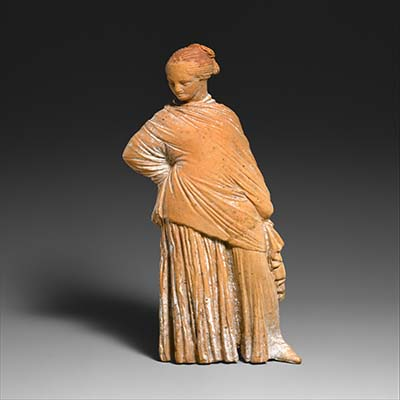
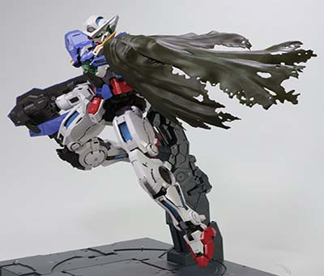
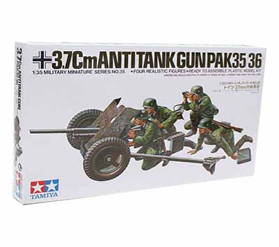

"2 Idol Neolithic Figures", https://www.ebay.com/itm/254174068724 by eBay
"Terracotta dog Figure", https://www.metmuseum.org/art/collection/search/240880
by The Metropolitan Museum of Art
"The Thinker of Hamangia", https://www.facebook.com by Facebook Precious Box
Prehistory Times
All the way dating back to the prehistoric times, humans have already started the creation
of figurines. More specifically around 25-30,000 BC,
there were figurines made of stone, which were figures of women appearing pregnant, these
were known as the Venus figurines, presumably made to represent fertility.
Figurines slowly evolved over the years and materials got more advanced, such as pottery and
precious stones. No one knows the exact reason
for their creation or how they were used, but it is widely believed that they were used for
rituals and religious purposes.

"Terracotta statuette of a standing woman",
https://www.metmuseum.org/art/collection/search/248166 by The Metropolitan Museum of Art
"Glazed Pottery Dog", https://en.wikipedia.org/wiki/Chinese_ceramics by
Wikipedia
"Lion-shaped Candle", https://en.wikipedia.org/wiki/Chinese_ceramics by
Wikipedia
Iron Age - 30 BCE
Figurines at this time started to get more widely known. From Porcelain in 1500 BCE to
Ancient Greek Terracotta figurines in 30 BCE.
Figurines were made all around the world, using different materials and styles. The use of
them also started to change from mostly religious purposes and rituals,
to decorative purposes and a sign of wealth.
"Yamato Figure",
https://favorgk.com/products/licensed-yamato-with-led-one-piece-resin-statue-toei-animation/
by FavorGK
"Strike Freedom Gundam",
https://en.gundam.info/premium-bandai/detail.html?cn=sg&lang=en&code=N2802033001001 by
gundam.info
"Tamiya Tank Destroyer",
https://www.tamiya.com/english/products/35390/index.html by tamiya
Modern Era
Nowadays, figurines are made out of an even wider variety of materials, mostly consisting of
plastic, and resin.
These were called figures and were mostly for entertainment and decorative or collecting
purposes. From many different regions came many different
types of figures, such as action figures, model figures, and even model kit figures.
Action Figures
Action figures, are most well known for their articulation and poseablity. Most commonly
made of out plastic, these figures are often based off fictional or
historical characters as toys. While they are often used as toys, recent times have seen
a
rise in popularity of the collection of these figures, this is due
to the increase in rarity of old figures and thus increase in value. Started in atleast
200
BCE, they used to be made of wood and clay. However, ever since the 1960s
when 'action figures' were first coined by Hasbro, they have been made mostly out of
plastic. The reason for coining the term 'action figure' was to market their new
new figure of a military themed character. It was aimed towards boys who refused to play
with 'dolls' which are normally a girl's toy.
Model Figures
Model figures, also known as scale models, are figures made to scale fictional or real
life
characters and objects. These figures are often made of plastic or resin, and are
often used for display or collecting purposes. A popular genre of model figures are
military
models. Such examples are tanks, planes and even ships. Many companies such as Tamiya
specialize in these models. Another popular genre are anime figures, with a wider
variety of
characters and styles, due to anime growing in popularity, these have also seen
an increase in popularity. With figures ranging from $40 to $500 or more, if offers a
wide
range of quality and options for all collectors.
Plastic Model Kits
Plastic model kits, or also known as plamo, are plastic scale models that come as a kit,
for
consumers to build. Kits can vary in difficulty, from beginner 'snap-fit' kits,
to advanced kits that require special tools and more experience. One type of model kit
that
display this difficulty very well are Gundam model kits, which are based off
the anime series Gundam. from HG, RG, MG to PG, each tier provides more difficulty and
detail and more parts. Another popular line of model kits are military model kits which
Tamiya
also produce and specialize in. These kits are known for their attention to detail and
flexibility in creativity. Hobbyists often use different techniques and tools to
customize
their kits, such as painting, decals, panel lining and more. And even kitbashing which
is
the process of using multiple kits to create a custom model themselves. Plastics model
kits allow hobbyists to express their creativity and skills.
"Action Figure",
https://www.suning.com/itemcanshu/0071178915/12059745888.html by 苏宁易购
"Figure Companies you need to know",
https://www.thesprucecrafts.com/6-action-figures-companies-you-need-to-know-17815 by
SpruceCrafts
"Best Spider-Man Action Figures",
https://www.youtube.com/watch?v=B-wjxzRJtEg by Carbon Scoring
"Heroes in Action",
https://en.wikipedia.org/wiki/Action_figure by Wikipedia
"Roronoa Zoro Three-blade",
https://www.daraz.com.bd/products.html by Daraz
"GERMAN MAIN BATTLE TANK",
https://www.tamiya.com/english/products/56047/index.html by
Tamiya
"Hu Tao Figure",
https://www.reddit.com/r/Genshin_Impact/ by Reddit
"Luffy Figure",
https://theuninhabitedisland.easy.co/collections/藝術擺件/products/-現貨-海賊王系列雕像-四檔魯夫-實色版 by easy
"Tamiya Ferrari F50",
https://www.ebay.com.sg/itm/325427360468 by ebay
"Gunpla Figure",
https://www.3djuegos.com/manga-anime/noticias/ by
3djuegos

"Perfect Grade Gundam Exia",
https://www.gunjap.net/?cat=389 by GUNJAP

"Tamiya Anti Tank Gun",
https://squadron.com/1-35-3-7cm-pak-35-36-anti-tank-gun by squadron